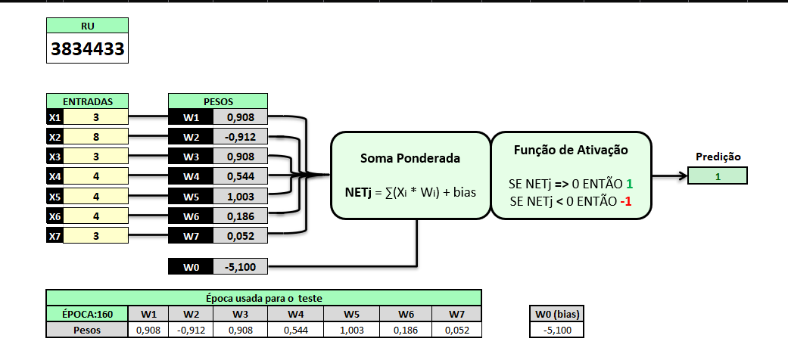
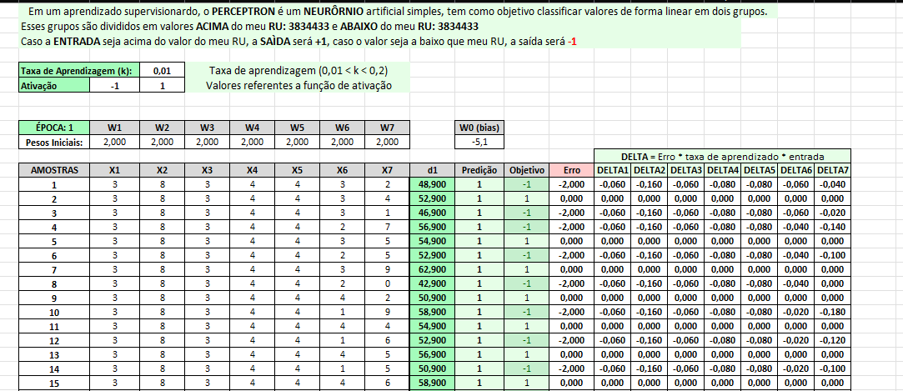
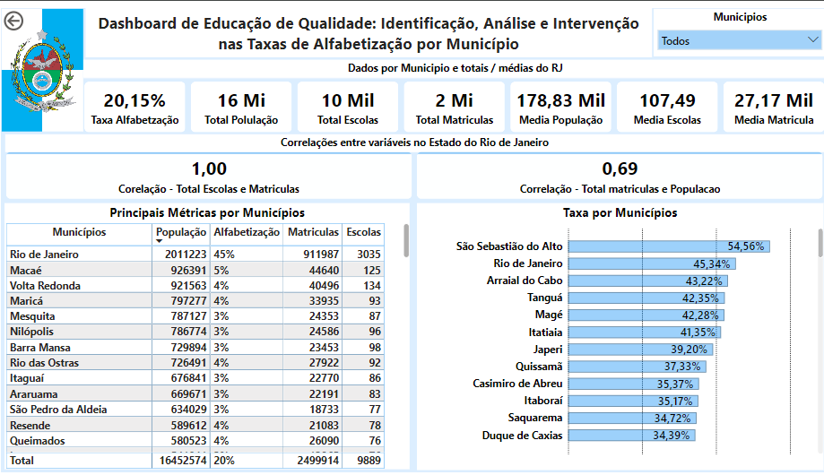
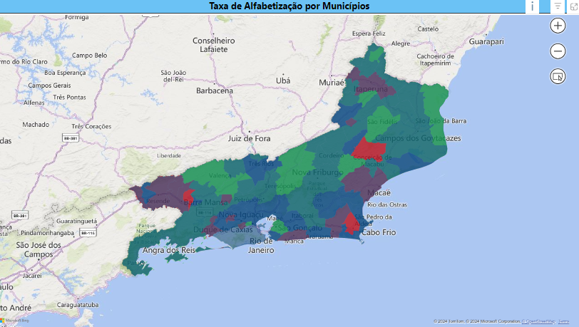

Meus Projetos
Projeto 1:
Criação de um Perceptron
Estrutura:
- Entradas (Inputs): Recebe um conjunto de valores de entrada.
- Pesos (Weights): Cada entrada é multiplicada por um peso. Os pesos ajustam a importância de cada entrada na decisão final.
- Função de Ativação: O somatório das entradas ponderadas é passado por uma função de ativação, que decide a saída final. No perceptron básico, a função de ativação é uma função de passo (step function), que retorna um valor 1 se o somatório for maior que um determinado limiar, e 0 caso contrário.
- Saída (Output): O resultado da função de ativação, que é a decisão final do perceptron.
Funcionamento:
- Processo de Decisão: O perceptron calcula uma combinação linear das entradas multiplicadas pelos pesos, adiciona um viés (bias), e passa o resultado pela função de ativação para determinar a saída.
- Treinamento: Durante o treinamento, o perceptron ajusta os pesos com base no erro entre a saída prevista e a saída real, utilizando um algoritmo de aprendizado, como o algoritmo de aprendizagem perceptron.
Algoritmo de Aprendizagem: O algoritmo de aprendizado ajusta os pesos do perceptron com base no erro da previsão. O ajuste é feito para minimizar a diferença entre a saída esperada e a saída prevista.
Limitações: O perceptron é capaz de resolver apenas problemas linearmente separáveis. Para problemas mais complexos, como aqueles que não podem ser separados por uma linha reta, são necessárias redes neurais mais avançadas e camadas adicionais.
Em resumo, o perceptron é uma ferramenta simples e fundamental para entender o funcionamento das redes neurais e é a base para modelos mais complexos, como redes neurais multicamadas e redes neurais profundas.
Imagens do Perceptron

Imagens de Treinamento

Projeto 2:
Educação Contínua
Neste projeto, o objetivo foi analisar e identificar os municípios com as menores taxas de alfabetização. Utilizando ferramentas de visualização de dados, como gráficos de barras e mapas interativos, foi possível destacar as áreas mais críticas que necessitam de atenção urgente e intervenção estratégica.
O projeto também incluiu a criação de um dashboard interativo que permite filtrar dados por diferentes critérios e visualizar correlações entre fatores como escolaridade, número de matrículas e população. Essas análises ajudaram a desenvolver recomendações para melhorar a alfabetização nessas regiões, como capacitação de professores e monitoramento contínuo dos resultados.
O resultado final foi um recurso visual poderoso que orienta estratégias eficazes para melhorar a educação em áreas necessitadas, proporcionando uma visão clara e direcionada para a tomada de decisões educacionais.
Imagens do Projeto
pag 1. Resultados

pag 2. Mapa de Taxa de Alfabetização
